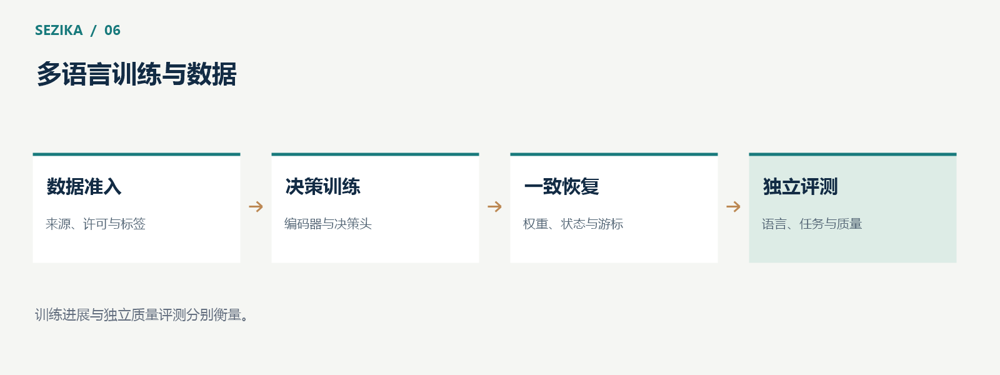

Sezika 的多语言决策能力来自语言表示基础与面向具体判断任务的训练。训练代码能够运行，只是建立能力的第一步；数据来源、标签含义、恢复一致性与独立评测，决定了最终模型是否可靠。
预训练编码器把输入转换为上下文表示，为后续决策提供语言信息。决策头再学习如何利用这些表示比较候选、评价等级或判断命题。
训练可以先固定编码器，只更新决策头；也可以进一步更新编码器参数。前者成本较低，后者有机会让表示更贴近目标任务，但需要更多计算与更严谨的验证。
Sezika 的真实 GPU 训练已经涉及编码器与决策头的全参数更新。它是在已有语言表示基础上开展训练，不能理解为从零训练了一个通用语言基础模型。
不同来源的数据可能面向不同任务，标签也可能采用不同定义。数据进入训练前，应明确来源、许可、用途、语言、任务和标签含义。
把数据转换成统一格式，不会自动消除这些差异。一个来源里的“正例”，可能表示语义相似；另一个来源的“正例”，可能表示事实成立。如果缺少明确映射，统一字段会掩盖不同含义。
项目代码的许可同样不能覆盖训练数据与模型资产。自有代码采用 Apache License 2.0，数据、tokenizer 和底座模型需要分别遵守自己的许可和使用范围。
大规模语料适合按固定来源与顺序逐步读取。流式处理让训练不必一次把所有样本放进内存，同时需要保存当前来源和读取位置。
Sezika 当前全量训练方案采用一条记录一次更新，目标为 14,592,720 次更新，对应这一轮固定计划中的完整处理目标。这个数字描述训练工作量，不代表训练已经完成，也不代表完成后会达到某个准确率。
短程训练可以验证流程，抽样可以用于诊断；它们都不能替代完整一轮训练。模型效果最终要在隔离的评测数据上测量。

可靠的恢复点需要同时保存权重、优化器状态、训练元数据和语料游标。权重决定模型当前状态，优化器状态影响下一次更新，元数据说明已进行的训练，游标定位下一条输入。
这些内容应来自同一个一致边界。如果权重已经更新，而游标仍停在更新之前，恢复时可能重复处理；如果游标领先于权重，则可能漏过样本。
训练工具和算子发生变化后，也需要确认旧状态如何兼容。一个恢复点能够加载，只说明文件被接受；恢复后同一输入是否产生一致更新，需要进一步验证。
tokenizer 能处理一种语言，只说明它能把文本编码。正式的语言能力还需要评测否定、数字、实体、长候选、混合语言和领域表达。
“not urgent”与“urgent”只差一个词，却可能改变业务优先级；“已经解决”和“还没有解决”也需要明确区分。多语言测试不能只使用容易判断的短句，更不能只统计整体平均值。
有价值的评测应按语言、任务、输入长度和难度切片，观察哪些输入稳定，哪些输入需要复核。总体指标较好，也可能掩盖某个语言或领域的明显缺口。
教师模型可以帮助生成候选标签、扩充表达或发现困难样本。但自动生成的标签仍可能错误，格式合格也不等于语义正确。
正式评测需要独立、可信的答案与隔离的数据。相似样本或同一问题家族若同时进入训练与测试，可能使测量过于乐观。人工审核、用途许可和数据隔离都需要明确落实。
截至 2026 年 10 月 13 日，Sezika 已执行真实的 C# GPU 全参数训练与断点恢复，完整一轮训练尚未完成，项目因算力与资金条件暂缓。后续需要在恢复训练之外，完成独立质量评测、概率校准与新权重部署验证。
训练推进次数反映工作进展，独立评测反映能力表现。把这两者分别记录，才能清楚回答模型训练到了哪里，以及它究竟能做好什么。
训练方向与模型说明见 Sezika 项目文档。